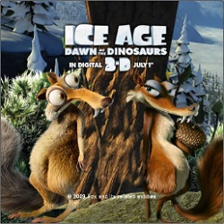

Multimedia Compression
| Course: | CSCI 576 - Multimedia Systems Design (University of Southern California) |
| Instructor: | Parag Havaldar |
| Project: | Video Layered Based Compression |
| Language: | Java |
The goal is to separate foreground and background of a given video, and then compress them differently. A frame is divided into several 16x16 blocks. Each block is then marked as foreground or background, depending on its motion vector.
| Compress foreground and background differently. (The background is over-compressed so the difference can be easily seen) |
| The foreground is marked with white squares. |
| Another example. |
| Project: | Choosing Representative Colors |
| Language: | Java |
The goal is to design and implement an algorithm, which chooses n representative colors for a given image.
|  |  |
|
| Input image | n = 4 | n = 8 |
 |
||
| Input image | n = 4 | n = 8 |